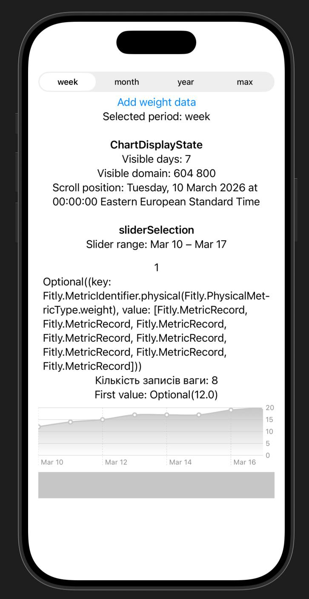

Короткий опис
Текст опису обсягом до 300 символів що містить основну суть дослідження.
Мета дослідження
Визначення наукової мети та вектору розвитку проєкту.
Основні завдання
- Аналіз предметної області та існуючих рішень.
- Проектування архітектури інформаційної системи.
- Розробка програмного забезпечення та тестування.
- Оцінка ефективності отриманих результатів.
Об'єкт дослідження

Очікувані результати
Опис кількісних та якісних показників які планується отримати в ході роботи.